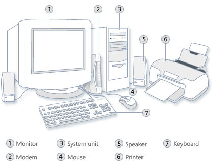
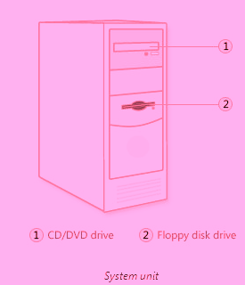
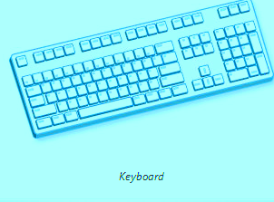
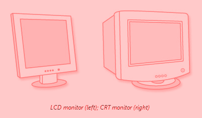
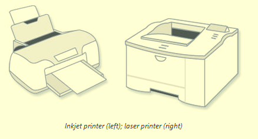
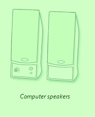
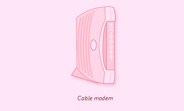

If you use a desktop computer, you might already know that there isn't any single part called the "computer." A computer is really a system of many parts working together. The physical parts, which you can see and touch, are collectively called hardware. (Software, on the other hand, refers to the instructions, or programs, that tell the hardware what to do.) The following illustration shows the most common hardware in a desktop computer system. Your system might look a little different, but it probably has most of these parts. A laptop computer has similar parts but combines them into a single, notebook-sized package
CPU is very important component of computer.it is also called brain of computer. It is very important component of computer. It controls the working of overall of computer. It has two parts. cpu is also called central proccessing unit.

Your computer has one or more disk drives—devices that store information on a metal or plastic disk. The disk preserves the information even when your computer is turned off.
Your computer's hard disk drive stores information on a hard disk—a rigid platter or stack of platters with a magnetic surface. Because hard disks can hold massive amounts of information, they usually serve as your computer's primary means of storage, holding almost all of your programs and files. The hard disk drive is normally located inside the system unit.
All computers today come equipped with a CD or DVD drive, usually located on the front of the system unit. CD drives use lasers to read (retrieve) data from a CD; many CD drives can also write (record) data onto CDs. If you have a recordable disk drive, you can store copies of your files on blank CDs. You can also use a CD drive to play music CDs on your computer.
A mouse usually has two buttons: A primary button (usually the left button) and a secondary button. Many mice also have a wheel between the two buttons, which allows you to scroll smoothly through screens of information. Mouse pointersWhen you move the mouse with your hand, a pointer on your screen moves in the same direction. (The pointer's appearance might change depending on where it's positioned on your screen.) When you want to select an item, you point to the item and then click (press and release) the primary button. Pointing and clicking with your mouse is the main way to interact with your computer.
A keyboard is used mainly for typing text into your computer. Like the keyboard on a typewriter, it has keys for letters and numbers, but it also has special keys: The function keys, found on the top row, perform different functions depending on where they are used. The numeric keypad, located on the right side of most keyboards, allows you to enter numbers quickly. The navigation keys, such as the arrow keys, allow you to move your position within a document or webpage.

A monitor displays information in visual form, using text and graphics. The portion of the monitor that displays the information is called the screen. Like a television screen, a computer screen can show still or moving pictures. There are two basic types of monitors: CRT (cathode ray tube) monitors and the newer LCD (liquid crystal display) monitors. Both types produce sharp images, but LCD monitors have the advantage of being much thinner and lighter.

A printer transfers data from a computer onto paper. You don't need a printer to use your computer, but having one allows you to print e‑mail, cards, invitations, announcements, and other material. Many people also like being able to print their own photos at home. The two main types of printers are inkjet printers and laser printers. Inkjet printers are the most popular printers for the home. They can print in black and white or in full color and can produce high-quality photographs when used with special paper. Laser printers are faster and generally better able to handle heavy use.

Speakers are used to play sound. They can be built into the system unit or connected with cables. Speakers allow you to listen to music and hear sound effects from your computer.

To connect your computer to the Internet, you need a modem. A modem is a device that sends and receives computer information over a telephone line or high-speed cable. Modems are sometimes built into the system unit, but higher-speed modems are usually separate components.
